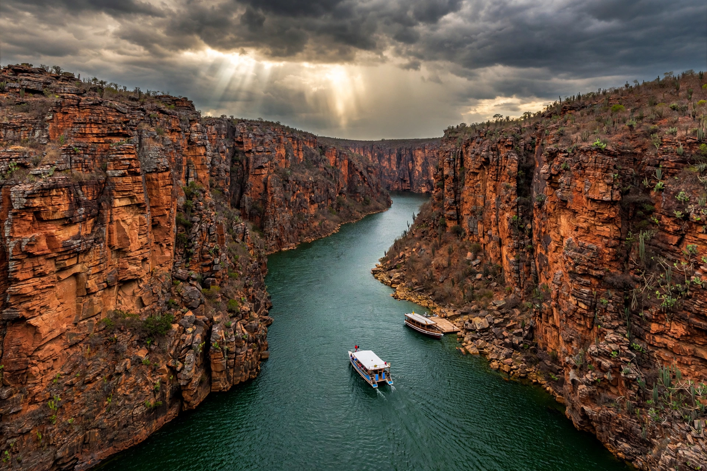

| Sergipe | |
 | |
| Country | Brazil |
|---|---|
| Capital | Aracaju |
| Area | 21,925 km² (smallest Brazilian state) |
| Population | about 2.2 million |
| Region | Northeast |
Sergipe is the smallest state of Brazil, located in the northeastern region between Alagoas to the north and Bahia to the south and west, with the São Francisco River forming its northern boundary. Its capital is Aracaju.
The region, inhabited by Tupí-speaking peoples, was colonised by the Portuguese from the late 16th century and long subordinated to Bahia, becoming a separate captaincy in 1820 and a province of the Empire in 1824. Its first capital was São Cristóvão, one of Brazil's oldest towns, whose São Francisco Square is a UNESCO World Heritage Site; the capital moved to the planned city of Aracaju in 1855.
Sergipe's landscape runs from coastal lowlands through agreste to semi-arid sertão. The Xingó hydroelectric plant on the São Francisco River, with its dramatic canyon, is a major power source and tourist attraction. Sugarcane, oranges, coconut, cassava and petroleum and natural gas production are important to the economy.